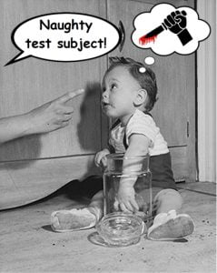

DATE – Sunday 6th December
TIME – 1600hrs to 2200hrs GMT
VENUE – Not Solo (Mobius as primary)
PLATFORMS – PC/Mac & XBox
TARGET SYSTEM – Timocani (Pending distinctly possible change!)
OBJECTIVES – UA Convoy / Medical Convoy
So. Yeah. The Barrel on Sunday.
There are certain things we commanders do – revisited escapades, preoccupations and interests which just sort of take root in the psyche and praxis of a person or group – which become part of the ongoing fabric of their being. For some it’s just something like putting griefers on one’s KOS list or baiting weak pirates in Open, or never trading in slaves, and these things can come in many forms, but out of them can grow true traditions or traditional practices… Things we pass on to newer friends and inmates in the various asylums of our various lives… Things that take root because they speak not only of our past but continue to remind us of what we continue to be, what we hope to carry into our collective future.
Thinking about this, I’m remind of my youth and what I’ve managed to pass on to others. Refining certain things as time has passed. Building things up into positive traditions, improving on them, enriching them as time goes by, if you will…

The Me and some woman (off-shot) who gave birth to The Me, Earth, circa 3268.
My niece Clara and Dr Punchable McCretin (off-shot), Mars, 3292.
What has this got to do with the Biscuit Barrels? Well, in a way, much as defying and despising arsepart parental figures in successive Powell generations’ households back in Sol, they are a sort of Canonn tradition. An opportunity to get involved, get acquainted, share ideas, share the workload, get some tangible heist cargo which will be of use to our collective SCIENCE! efforts. At least, that has always been the driving purpose of these Barrel things. The real success of them has never been mine but shared by the participating commanders as a whole. (The more the merrier really is the watchword for these things.)
The earlier Barrels really were exceedingly valuable beyond just acquiring then-rare UAs in helping us along the path of being a cohesive player group – even before we planned to formally become one or even had the option of things like a home system and all that guff. The next one on Sunday should serve us in much the same way. Helping us to retain that cohesion, what with there being a rather swift upswing going on in our membership.
Certainly, the Race Club and Fight Club are going to be both enjoyable and profitable and the somewhat extended work required of us during the Moons of Merope mission will serve us well in numerous ways… but the forthcoming Barrel is an excellent platform for all members, new or otherwise, to continue to gel and to get some serious action thrown in without having it feel too much like a marathon or too competitive. (Just because it’s scheduled for six hours, it doesn’t mean participants are expected to be around for the whole six hours; I and some of the others will be around throughout but getting along for just, say, one or two or three hours will be more than dandy for others.)
Right! Moving on… If it ain’t fun, yeah, you might be doing it wrong. But, there again, it might just prove not to be your kind of gig. It’s not for absolutely everybody, true, but the Barrels aren’t just a one-trick pony and there’s something for pretty much any Canonneer to benefit from. Tightening up your wing flying and familiarity with wings functions. Familiarising yourself with modules and tactics you might otherwisee have spent much time on. Chattering about the UA and other Mysteries in general, checking known data on something or other, using others as sounding boards for fresh theories and, in turn, helping flesh out and explore such theories and ideas. Shooting stuff, too. There’s the shooting, sure, though it’s by no means a non-stop pew-fest like, say, winging up to hit a RES.
Participants are not required to be in-game for the entire scheduled six hours of the Barrel. I will be around in the Bifrost throughout and I expect other addicts to be similarly around for much if not all the six hours. But it’s not that you can’t show up after it’s started or leave before 2200hrs GMT. But for those of you turning up, here’s some…
GOLDEN RULES
#1 – If it ain’t the right kind of Strong Signal Source, screw it. Get back to camping out in supercruise.
#2 – Get your wing’s plan sorted before engaging. You might be winged up but ‘winging it’ is just asking to get yourself and, worse yet, your wingmates splashed. We’ve never lost a ship during a Barrel so let’s not start now because you’re some combination of over-eager and cocky. This said, an ability to improvise remains valuable. Basically, though – plan now, improvise later.
#3 – Ensure that you are winged up with sciencers with both compatible intentions and complimentary ships and load-outs. This may take a short while prior to beginning your camping out but it will pay hefty dividends thereafter. In previous Barrels, we had differing intended uses for heisted UAs. Not so much of a problem these days, UAs being so easy to acquire, but the situation isn’t really so different in that you may want to see the cargo ‘banked’ for later use and another sciencer might insist that their idea for a test is more pressing. Rather than having things cause any irritation after you’ve both helped in the same heist, just find another wing – because there is always another wing to join or form, it’s just how these things (quite happily for all) work out.
Equally, with ships and loadouts, there’s always a slot to fill even if it requires a couple of minutes rearranging. We’re all rather accommodating sorts, aren’t we? Don’t worry about it. Maybe you’re not coming in a max-tanked A-rated Prismatic bulldozer like the Lapsed Pacifist. So what’s the problem? It’s never a competition. Bring yourself and your ship and everybody’s already onto a winner.
#4 – Don’t be shy about meeting new faces. You won’t be the only newcomer joining in, and the secondary purpose of these Barrel events is to get acquainted. You will find that those participating Canonneers of longer standing are a surprisingly welcoming bunch and saying “Hello” only takes five seconds before you’re in the mix anyway!
#5 – Right tool, right job. Anacondas aren’t best applied as Scoopers in a wing with Asps and Cobras. Similarly, a Diamondback or a Courier in a wing with Annies and Pythons isn’t going to be the wisest fit for playing Blocker. (I should be putting up some further notes on pertinent modules later.)
That’s it for the Golden Rules except to say each commander’s intuition and ability to improvise is their own king. Only, don’t rely upon it in place of getting your ducks in a row beforehand because in a wing in a scrap like those with the larger Medical Convoys it’s not just your hull out there on the line.
Anyway, here’s some more piles of words which may very well be of note to those who’re coming or thinking of coming along.
Join Mobius.
Not an essential, and not to play down the style of play of those of us who only even play in Open, but assuming you’re not adverse to it apply now if you’re not already a member. Fact is, though, the majority of the PC/Mac Barrel action shall be in Mobius.
It can take a little time to get accepted by Cmdr Mobius (who handles hundreds of applications each week). If you turn up on the day without having already been given access to Mobius, you may be shuck out of lit. Or something like that. So, yeah, apply today to get it sorted well in time and avoid any frustration.
Feeling Gung-Ho? Save it for the RES.
You can kill stuff anywhere any time; Barrel heisting is about everybody getting in, getting the goods and getting out. Hotdogging and showboating is for amateurs and going for kills is often counter-productive to assisting in the collective effort and wellbeing of your wing as a whole. At it most basic, consider this: if you’re concentrating on one target you want to kill, you’re not keeping your eye on the wider situation. (Killing all escorts can, yes, lead to success and it’s still a valid strategy but it’s better kept as an option after preparing a tighter plan rather than relying upon as the only approach.)
Been Barrelling or heisting before? Great. Share the wealth!
If you’re a Barrel or heist veteran, offer advice to newer Barrelers. Try not to simply form Vets Wings leaving less-experienced participants’ wings at a disadvantage during a heist. Furthermore, better to spread out the ‘Old Guard’ across the wings to some extent because newer Canonneers will likely have questions about thing beyond the Barrel itself which you could answer. (And some of the newer Canonneers have weaker ships or ships they’ve not been flying so long as you, so you can help out there with some advice and shared insight, too.)
Notes for Blockers
Get shot at. A lot. Be the ones who lob off the Hatch Breaker Limpets rather than leave that to a Scooper. Bang 4 pips to shields to maintain them better, since you can attract fire from escorts with 1 or 2 in weapons.
If you’re playing the Blocker role and you can’t take a pasting like a tanked-up Annie, start from a distance and be the irritating sniper guy at the edge of the escort’s firezone, potentially drawing them away from the others while you zip about and stay on that edge.
Soon, the Shield Cell Banks will be getting nerfed. Feel free to enjoy them as they are now if you’re a Blocker. Each Canonneer’s chosen praxis is their affair and anybody starting to belittle the use of SCBs during the Barrel need only be reminded that the ‘fix is already in’ for 1.5/2.0 regarding this module.
If during a heist you’re not actively drawing fire from the escorts then you’re doing it wrong.
Notes for Scoopers
If you’re scooping, don’t rush it. Whether a Blocker or a Scooper, this is an exercise as much about keeping your cool under fire as anything else – and rushing it, and popping the cargo by hitting it instead of scooping it… well… it rather devalues the pains being taken by your wingmates.
Let them do their job, trust they know what they’re doing and their own limitations. They will bug out if they need to. They are trusting you to do your job similarly. Basically, make their painful efforts count by taking things steady.
Also, very importantly: the instant you have the cargo secured, announce it to your wingmates and boogie the hell out of there. They are waiting on you to give them the Boogie! order because, hey, they’re probably a little too busy getting shot at and drawing fire from each other’s targets to immediately see that the scooping’s completed.
Lastly, dropping from the wing prior to ordnance getting flung around will leave you sitting pretty without being under direct fire – and also make it easier for the rest of your wing to actually lure the escorts apart over an area of their better choosing.
Note to all Wings
There’s merit in factoring in the ability to bring in other commanders. Yes, the instancing can be tricksy and it means at least one of you sending wing requests while in a ruck. But if the Scooper drops from the wing as is the option presented above, bingo! Effectively, you can easily have a wing of five – which would be of some great use if the Medical Convoy you come across is one of those with five Vultures and not just two…
Final Note:
Check out the other recent addition to the Bulletin Board concerning ‘Resource Acquisition’ since it has some extremely fresh and pertinent observations regarding the heisting of Medical Convoys.
o7 – Nicholas Powell